.jpg){kind=link}


.jpg){kind=link}


把露天留给午前
十一月到二月，五点一过户外就沉下去。晋祠、平遥城墙、乔家的砖石会结薄冰，穿防滑靴，别穿底很平的棉鞋。城墙、晋祠、云冈和木塔都已经放在午前，下午进殿、进馆。
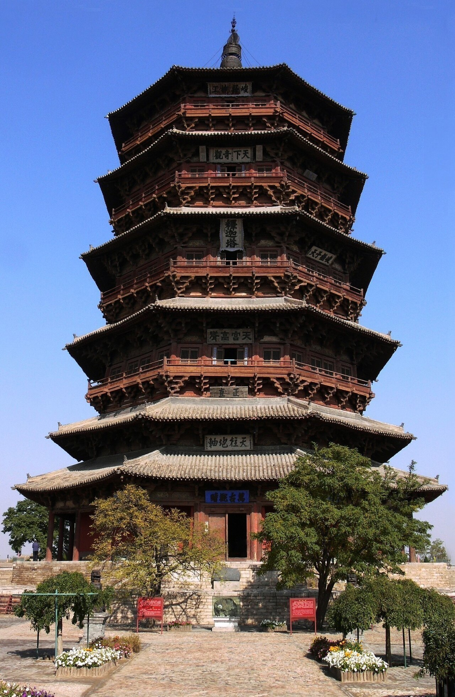
Shanxi · Winter Notes
封面是应县木塔的实拍。五天从太原走到大同，晚上再坐火车回来。冬天昼短风大，露天的地方都放在午前。
照片：Gisling，2007 年 10 月，佛宫寺释迦塔。画面按封面做了裁切。来源 · CC BY-SA 4.0。飘落的雪花是这本手册的主题，不是拍摄当天的天气。
北在上方。平遥、祁县、大同之间坐高铁，应县和悬空寺用一天包车，不必全程自驾。钟点是冬季的样本，车次以 12306 当天为准。
游览顺序第五日高铁返回
第一日
雪落晋祠
住太原。上午在祠里，下午进博物馆，晚饭就在食品街结束。
上午 · 9:20–11:50
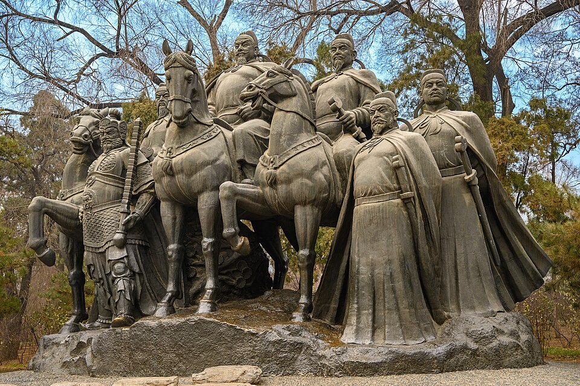
晋祠在太原西南的悬瓮山下，雪后几乎没有人。圣母殿飞檐压着白边，鱼沼飞梁会结薄冰，难老泉却仍然流动。先看水镜台和金人台，再进殿看宋代侍女像，最后在周柏前站一会儿。石阶湿滑，把停留放在殿内，不要在院里耗太久。
亮点难老泉冬天也不封冻 · 圣母殿宋代侍女像 · 周柏
下午 · 14:00–16:00
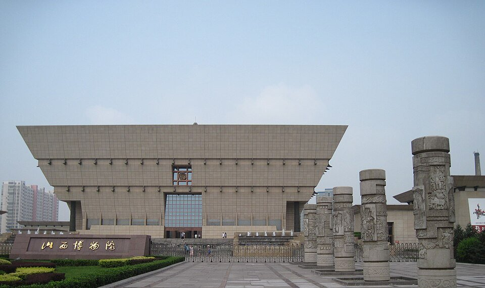
博物院在汾河西岸，从晋祠回城正好进屋避风。晋侯鸟尊、司马金龙墓的漆画屏和北朝佛像，把后面几天的木构、彩塑和石窟先串成一条线。说明写得清楚。免费，须预约，多数周一闭馆；赶上周一，就改去城里的纯阳宫。
亮点晋侯鸟尊 · 司马金龙墓漆画屏 · 北朝佛像
傍晚 · 17:30–19:00
钟楼街一带是太原晚上最省事的去处。冬天进店吃一碗刀削面或剔尖，再喝碗羊汤，热气比夜景重要。街不长，一个半小时足够。名吃「头脑」是早点，不是晚饭，今晚不要特意去找。吃完回酒店，养好明天的早班车。
亮点刀削面与剔尖 · 羊汤 · 吃完就收工
第二日
城墙与票号
太原南到平遥古城站，高铁约 35 分钟，二等座约 30 元。进城不要钱，通票另计。住在城内。
上午 · 9:30–11:00
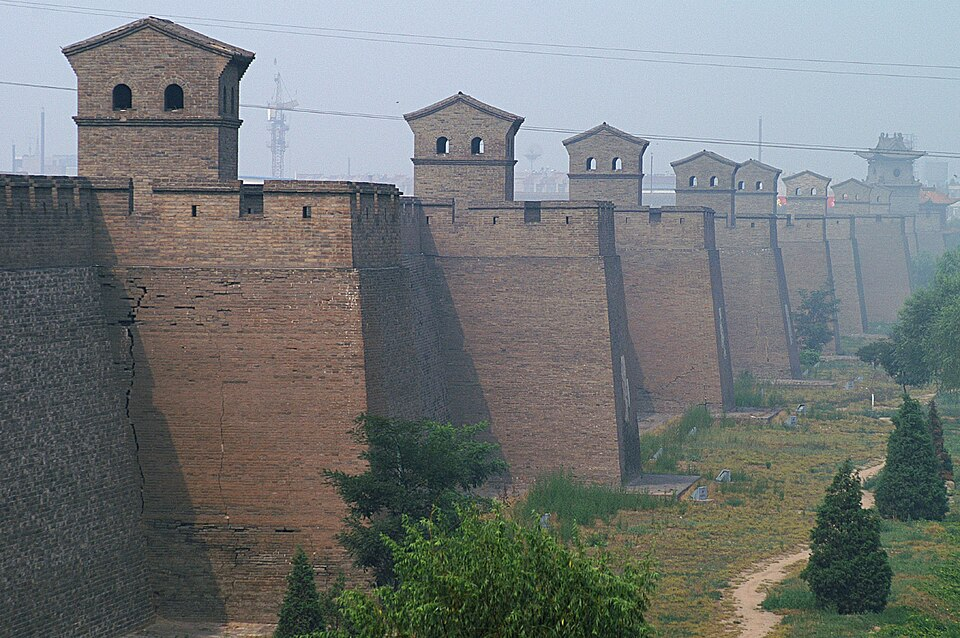
冬天先上城墙。马面和瓮城连成一条灰线，城外的田盖着雪，比城里的铺面更像平遥。风比地面大，从下西门走到北门就可以下来，不必绕完约六公里。古城站出来，出租大约十分钟，让司机停在好上的那一座城门。
亮点马面和瓮城 · 雪里的城外田 · 不必走完全程
午后 · 13:00–14:00
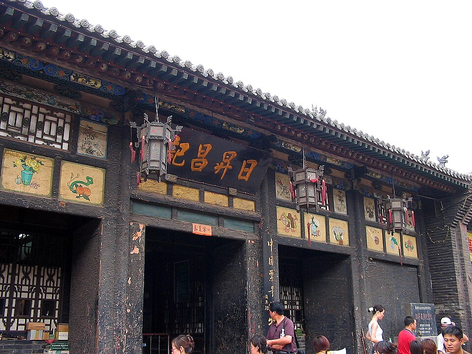
日升昌在西大街，下了城墙走过去就到。院子不大，柜房、信房和汇票还在，看的是一套办法：怎样把银子变成一张能在异地取钱的纸。冬天屋里有暖气，适合慢慢看章程。看懂票号，明天的乔家才不只是砖雕和深院。
亮点早期票号 · 汇票与防伪 · 暖房里慢慢看
午后 · 14:15–15:15
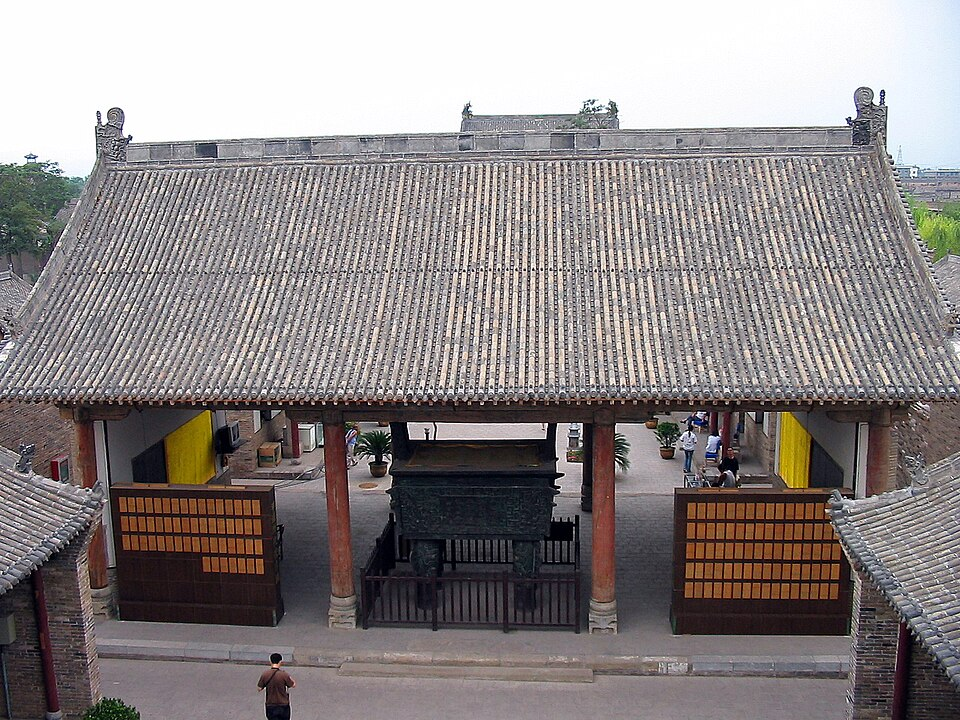
县衙离日升昌很近，从仪门沿中轴走到内宅，赋役房、刑具陈列和后宅都避风。冬天比继续在城墙上耗着舒服，通票里的室内景点适合放在午后。时间若只够细看两处，就留日升昌和这里。协同庆路过看一眼即可，中轴不长，一个小时够用。
亮点赋役房 · 内宅 · 冬天最舒服的一处
傍晚 · 16:00–18:00
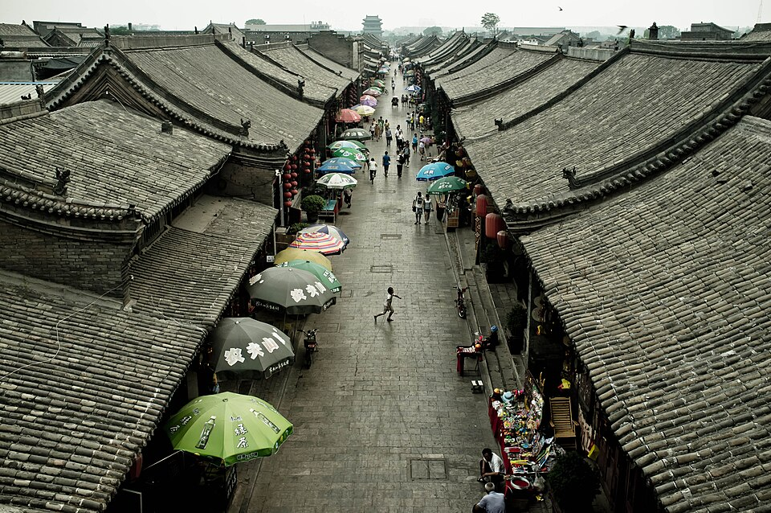
市楼在南大街中段，是古城的方向标，找路先找它。通票景点大约十七点半停止进入，之后用来逛街正好。灯笼亮起后，雪天的街道比白天安静，牛肉和碗托都在铺里。客栈住在城内，找店也先找市楼。明天行李直接放进后备箱。
亮点市楼灯笼 · 平遥牛肉 · 碗托
第三日
彩塑与晋商宅院
早上退房，行李放后备箱。傍晚回到太原过夜，好赶明天去大同的早班。
上午 · 8:20–9:50
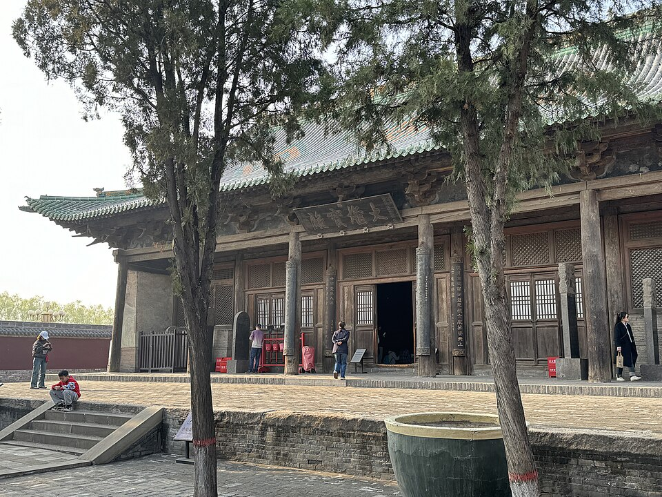
双林寺在古城西南，出租大约十五分钟。殿里是明代彩塑，菩萨殿的悬塑几乎伸到眼前，衣褶、手指和眼神都还清楚。冬天室内光线稳，比盛夏更好看，请关掉闪光灯。它不在古城通票里，门票要另买，进门时单独核销。
亮点明代悬塑 · 菩萨殿 · 单独买票
午前至中午 · 10:45–12:30
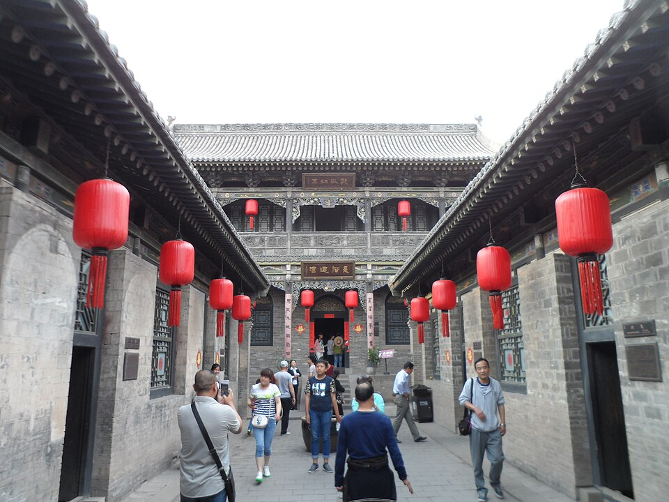
从双林寺到乔家堡大约四十五分钟。这里是晋商宅院，不是园林：高墙、窄巷、砖雕，院子一层层往里收。冬天游客少，砖地容易结薄冰，看中堂和整体格局即可，不必逐间拍照。在县城吃碗面，再去祁县东站，别把饭点耗在景区门口。
亮点高墙窄巷 · 砖雕 · 内宅层层套叠
下午 · 13:20 后出发
祁县东站离乔家大约二十分钟车程，高铁到太原南大约二十分钟。今晚换回太原住，是为了明天早班去大同，不必再从平遥倒一次车。晚上不加景点。行李一直放在车上，进站前给安检留出时间。到了酒店就休息，不再出门。
亮点祁县东进站快 · 换到太原过夜 · 行李不离车
第四日
石窟与辽代殿宇
太原南到大同南，高铁约 1 小时 50 分，二等座约 110 元。尽量坐上午八点前后的车。住大同。
上午 · 10:30–13:00
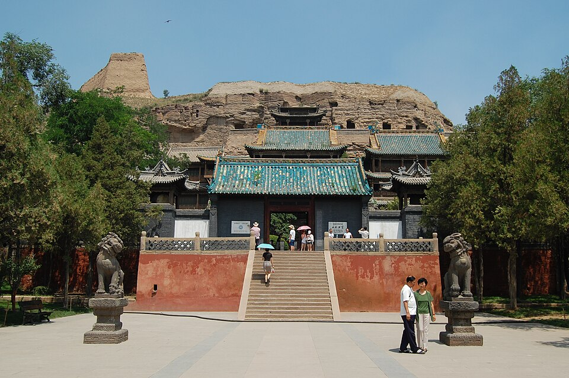
云冈在大同城西，从南站或市区过去大约四十分钟。冬天风硬，把时间留给第五窟和第六窟：外面有木构楼阁，既能避风，佛像也最完整。露天大佛看过就走。淡季票价低于夏天，入窟不要开闪光灯，外套可以穿进去。
亮点第 5、第 6 窟的楼阁 · 可以避风 · 淡季票
下午 · 14:20–15:40
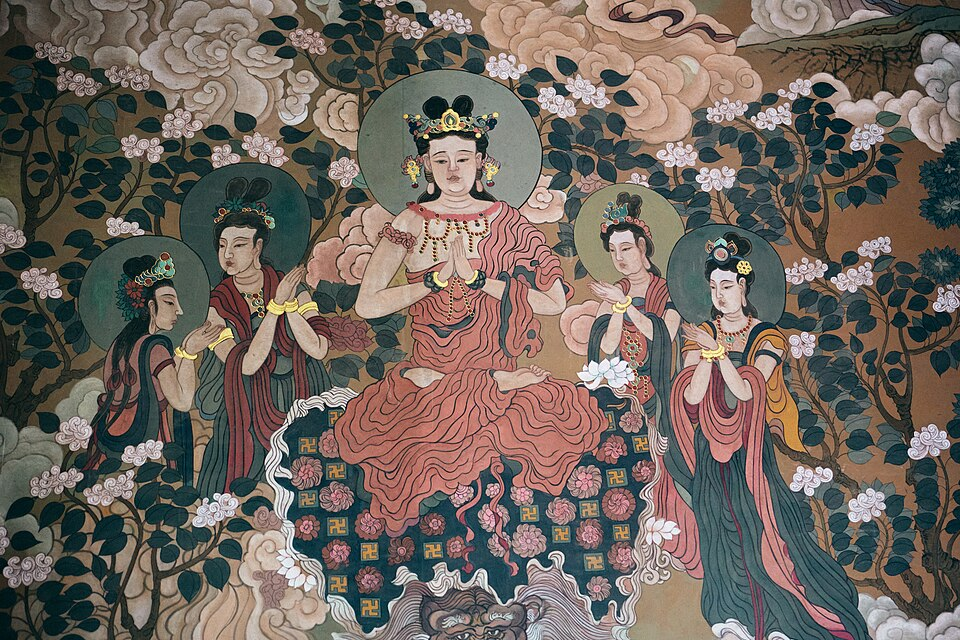
华严寺在大同古城内，从云冈回来大约四十分钟。薄伽教藏殿是辽代木构，彩塑沿墙排开，其中一尊合掌露齿的菩萨常被叫作东方维纳斯。殿里避风，彩塑也看得清。户外的石窟放在午前，这座殿留给下午就够。
亮点辽代木构 · 合掌露齿菩萨 · 下午避风
傍晚 · 15:50–16:30
大同城墙已经整修，傍晚可以免费上去。雪天不必走完整圈，挑靠近城楼的一段，看屋顶和城外的平原，大约四十分钟。五点以后天色掉得很快，看完即走。明天七点半要出发，晚饭就在酒店附近吃完，别再穿过半个城。
亮点免费城墙 · 雪线与城楼 · 四十分钟即走
第五日
木塔与悬空寺
7:30 从大同出发。包车按「大同 — 应县 — 悬空寺 — 大同南站」一次谈清，含等候。一车大约 600–800 元，下面预算按 700 元。
上午 · 9:00–10:00
应县木塔是辽代纯木塔，外观五层，内部还有暗层，全靠斗拱层层咬合。塔身已经倾斜，如今只开放底层，不能登高。一层能看见高大的释迦像和上方藻井，现场多半不让拍照。塔就在县城里，很好找。先在县城吃碗面再走，景区不管午饭。
亮点只开一层 · 斗拱 · 释迦像与藻井
中午 · 12:00–13:40
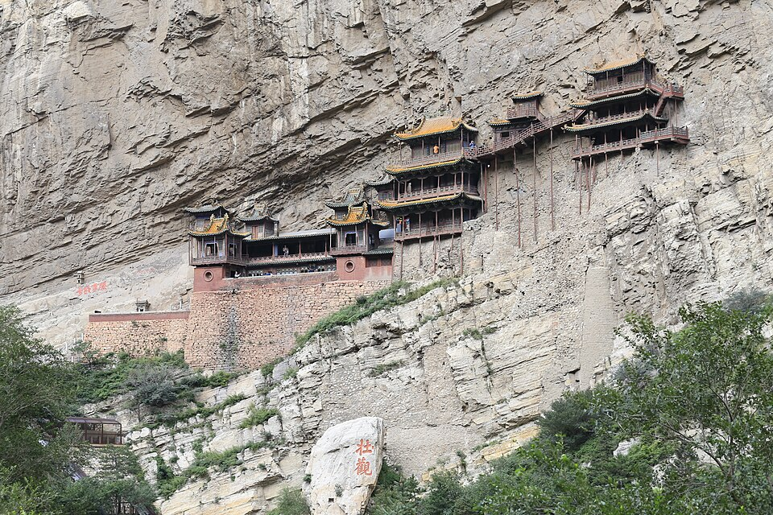
悬空寺嵌在浑源翠屏峰的峭壁上，从应县再走一个多小时。冬天谷风大，栈道窄。登临票每天限量，要和入园票分开买，景区摆渡也会占去时间。台阶一旦结冰就可能临时关闭，那时在谷底看整座寺，不必硬上，一样能看全。
亮点峭壁上的寺院 · 登临票要提前买 · 结冰就在谷底看
下午 · 15:00 后
看完悬空寺直接去大同南站，不要折回市区取行李，箱子一直放在车上。返回太原的高铁大约两小时，二等座提前买。若今晚不住太原，就把终点留在大同。包车按整天谈妥，写明等候，并送到南站，返程时间在车上说死。
亮点行李不离车 · 高铁约两小时 · 包车送到站
按 2026 年 11 月的公开票价估算，单位是元。两人同行、住一间双人房、同乘一辆车时，看「两人人均」。一个人独自走，房费和车费都由自己承担。
| 项目 | 两人人均 | 一个人 |
|---|---|---|
| 高铁二等座 | 275 | 275 |
| 门票 | 670 | 670 |
| 餐饮 | 500 | 500 |
| 住宿四晚 | 550 | 1,100 |
| 市内与包车 | 595 | 1,190 |
| 合计 | 2,590 | 3,735 |
门票 · 每人
用车 · 按一辆车
高铁四段大约是 30 + 25 + 110 + 110。住宿按太原两晚、平遥一晚、大同一晚，一间分别约 280、260、280 元，四晚一间共 1,100 元。餐饮按每天 100 元，若每天有一顿正餐，人均再加约 150 元。第五天专车若谈到 600 元，两人人均少 50 元。春节前后房价和车价另按上浮计算。六十岁以上、学生、儿童的门票优惠没有折进这张表。
都是冬天这条线真正会碰到的事。
十一月到二月，五点一过户外就沉下去。晋祠、平遥城墙、乔家的砖石会结薄冰，穿防滑靴，别穿底很平的棉鞋。城墙、晋祠、云冈和木塔都已经放在午前，下午进殿、进馆。
应县木塔只开放底层，不能登塔，一层佛像前通常不能拍照。悬空寺冬令时大约 8:30 到 16:30，登临票每天限量，台阶结冰会停开。七十岁以上、恐高，或有高血压、心脏病的人不要登临。前一天用官方渠道确认，包车路线写明送到大同南站。
山西博物院免费，只用官方公众号。参观日前三天的晚上八点放票，当天早晨八点还有一轮，多数周一闭馆，除夕前后再看当年公告。云冈用「云冈文旅」，悬空寺登临优先用「北岳云游」，不要找人代买。平遥通票和双林寺是两张票。太原至大同、大同返回的高铁，周末和春节档提前在 12306 买。
白天气温多在零下 5 度到 5 度，一月可能到零下十五度。城墙和河谷的风比雪难对付。外面一件防风外套，里面一件能脱掉的薄羽绒。票号、县衙和殿里有暖气或至少避风。订平遥客栈时问清是不是暖气，不要只看照片。
太原晚饭吃刀削面、剔尖、羊汤。「头脑」是早点，不是晚饭。平遥吃牛肉和碗托，大同仍是面。六十岁以上看国有景区，首道票经常免；学生票多为半价，证件带着。若还要去王家大院等地，再查当年山西文旅年卡的名录。只走这一条线的话，悬空寺登临、应县木塔和晋祠多半不在卡里。
打开这个链接的人都能投票、加想去的地方、认领任务，并改 AA。几秒内会同步到其他人的手机。
数据库还没建表。在 Supabase 左侧打开 SQL Editor，新建查询，把下面的语句整段运行一次，然后刷新本页。
还没有额外想去的地方。
「每人」会乘人数算进总额；「全团」先加总，再除以人数。高铁、门票、餐饮按每人，住宿和包车按全团。